Dependencia e independencia lineal. Bases
Combinación lineal
Una combinación lineal de dos o más vectores es el vector que se obtiene al sumar esos vectores multiplicados por sendos escalares.
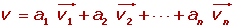

Cualquier vector se puede poner como combinación lineal de otros que tengan distinta dirección.

Esta combinación lineal es única.
Vectores linealmente dependientes
Varios vectores libres del plano se dice que son linealmente dependientes si hay una combinación lineal de ellos que es igual al vector cero, sin que sean cero todos los coeficientes de la combinación lineal.
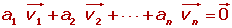
Propiedades
1. Si varios vectores son linealmente dependientes, entonces al menos uno de ellos se puede expresar como combinación lineal de los demás.
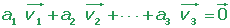

También se cumple el reciproco: si un vector es combinación lineal de otros, entonces todos los vectores son linealmente dependientes.
2. Dos vectores del plano son linealmente dependientes si, y sólo si, son paralelos.
3. Dos vectores libres del plano = (u1, u2) y 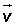 = (v1, v2) son linealmente dependientes si sus componentes son proporcionales.

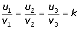

Determinar los valores de k para que sean linealmente dependientes los vectores 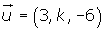, 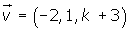 y 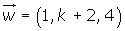. escribir como combinación lineal de y , siendo k el valor calculado.
, siendo k el valor calculado.
Los vectores son linealmente dependientes si el determinante de la matriz que forman es nulo, es decir que el rango de la matriz es menor que 3.
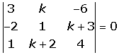
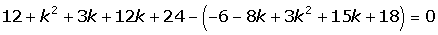
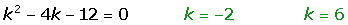
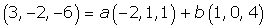
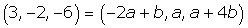
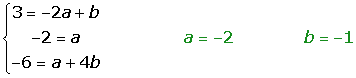
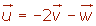
Vectores linealmente independientes
Varios vectores libres son linealmente independientes si ninguno de ellos puede ser escrito con una combinación lineal de los restantes.
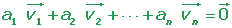
a1 = a2 = ··· = an = 0
Los vectores linealmente independientes tienen distinta dirección y sus componentes no son proporcionales.
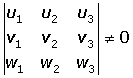
Estudiar si son linealmente dependientes o independientes los vectores:
= (2, 3, 1), = (1, 0, 1),  = (0, 3, −1)
= (0, 3, −1)
a (2, 3, 1) + b(1, 0, 1) + c (0, 3, −1) = (0, 0, 0)
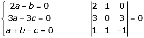
r = 2 n = 3 Sistema compatible indeterminado.
El sistema tiene infinitas soluciones, por tanto los vectores son linealmente dependientes.
Base
Tres vectores , y  con distinta dirección forman una base, porque cualquier vector del espacio se puede poner como combinación lineal de ellos.
con distinta dirección forman una base, porque cualquier vector del espacio se puede poner como combinación lineal de ellos.
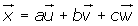
Las coordenadas del vector respecto a la base son:
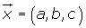
Base ortogonal
Una base es ortogonal si los vectores de la base son perpendiculares entre sí.
Base ortonormal
Una base es ortonormal si los vectores de la base son perpendiculares entre sí, y además tienen módulo 1.
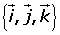
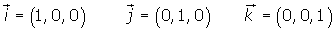
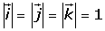
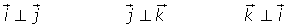
Esta base formada por los vectores 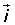, 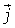 y 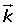 se denomina base canónica.
¿Para qué valores de a los vectores 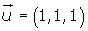, 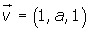y 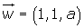 forman una base?
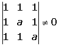
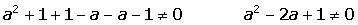
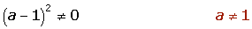
Para a ≠ 1, los vectores forman una base.